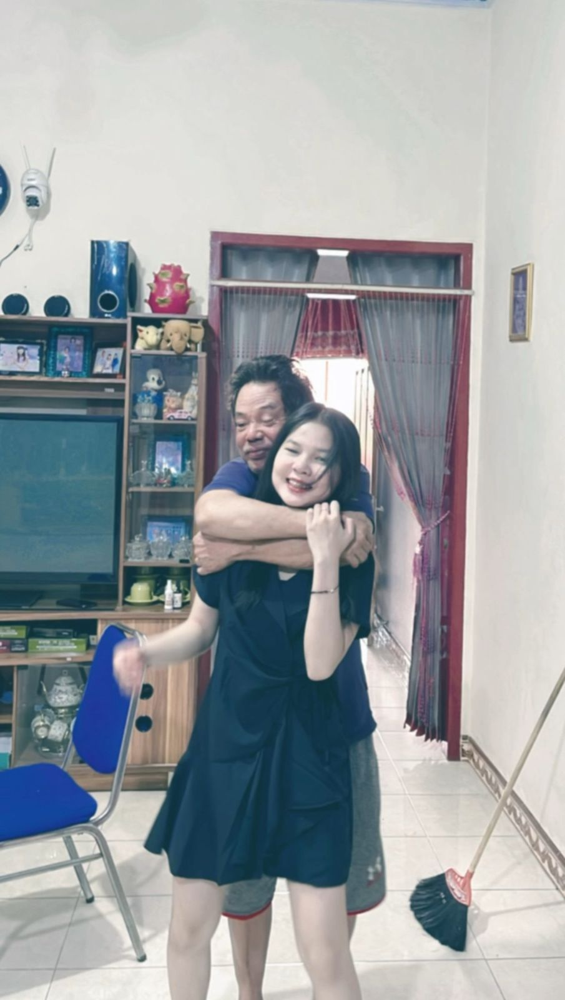
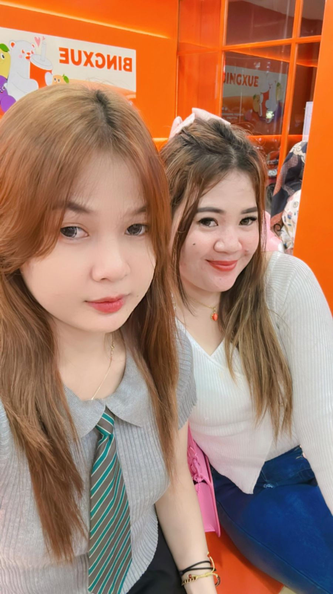
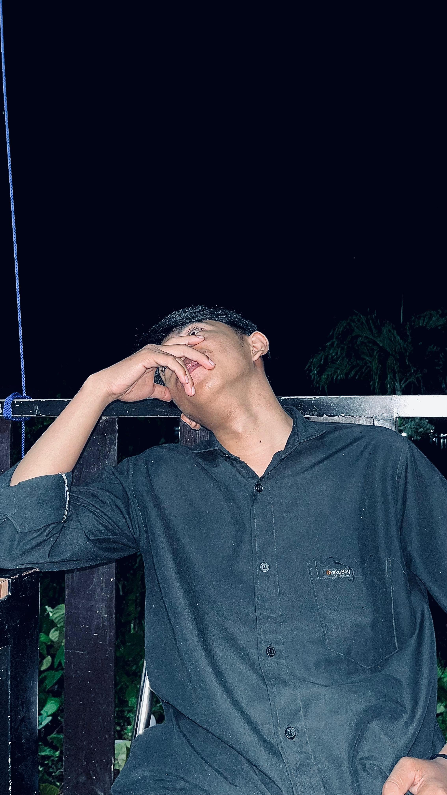
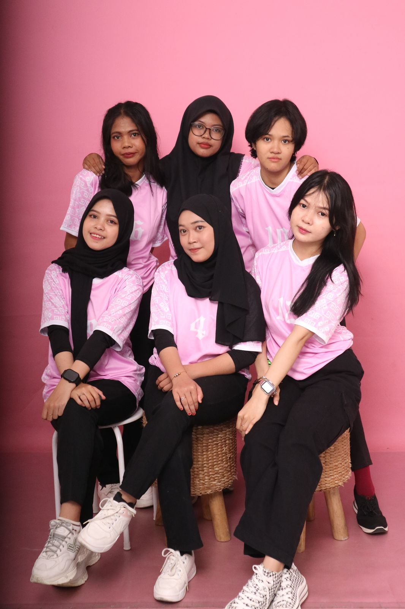
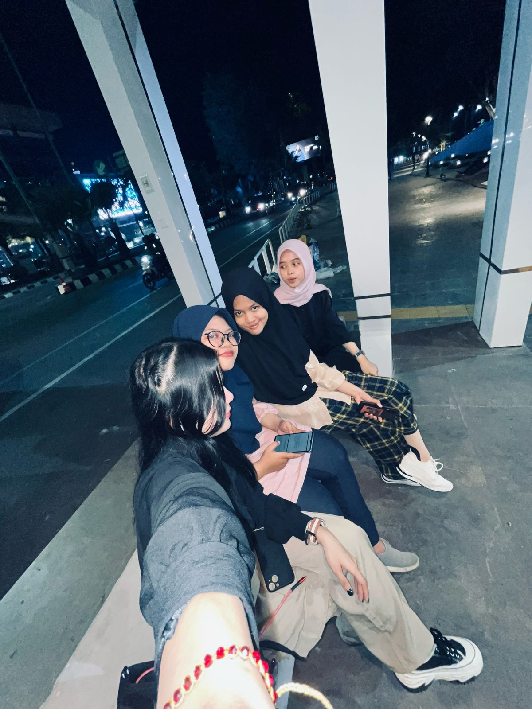
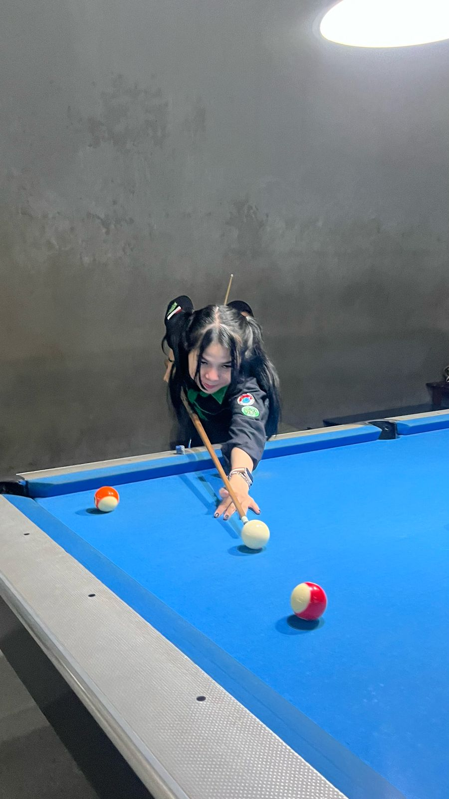

About Me
This is about me which is quite simple.
MY FATHER

"Dad, I want to say thank you so much for everything you have done for me. Since I was little, I have felt your great and sincere love. I may not always be able to express it in words, but in my heart, I always know how hard you struggle to give the best for our family."
MY MOM

"Mom, I want you to know how valuable you are in my life. There are no words enough to explain everything you have given me. Every step I take in this life is inseparable from the great influence that you have instilled. I realize that you have given me everything that is best for me, even more than I could have imagined. You are not only a mother in the biological sense, but more than that, you are a teacher, a friend, and an encouragement in every journey of my life."
MY SISTER
"Sis, I want to say thank you for all the attention and affection that you always give me. Since I was little, you have always been the one who protects me, gives me advice, and is a good example for me. Even though sometimes we fight or don't completely agree, I always feel that I am very lucky to have a sister like you. You are the best friend I have. When I feel down or confused, you are always there to give me support and encouragement. I learn a lot from you, both in small and big things. Every thing you do, be it big or simple, shows how much you love and care for me."
MY BOYFREND
"He is my boyfriend, he is the man who makes me excited again. He is one of the important roles after father, mother, and sister."
MY FREND
"friends in struggling on campus, they always accompany me when I am sad or in trouble, they are always there for me, thank you friends."
AYA

"Her name is Aya. She was my best friend when I first entered college, we often went everywhere together until we were like family, unfortunately we had to separate because we were in different classes."
SCHOOL FRIENDS

"They were my friends when I was in school, this moment was taken when we were going to perform cultural arts or what could be called dancing."
Night walk
"My friends and I were walking around the terrace of Samarinda, relaxing while enjoying the cool evening breeze."
Sport

"I really like sports such as jogging, badminton, fitness, and other sports. When I have free time, I usually take the time to exercise at GOR Sempaja."
Messium

"In my free time I also like to go to historical places like museums in Tenggarong. There are many lessons I can learn there, and many things I don't know yet. I like something new and hard to solve."
Billiards

"In addition to heavy exercise, I also like light exercise such as playing billiards. I usually play with my friends or my girlfriend. In billiards we can train the focus of the ball so that it can go in."